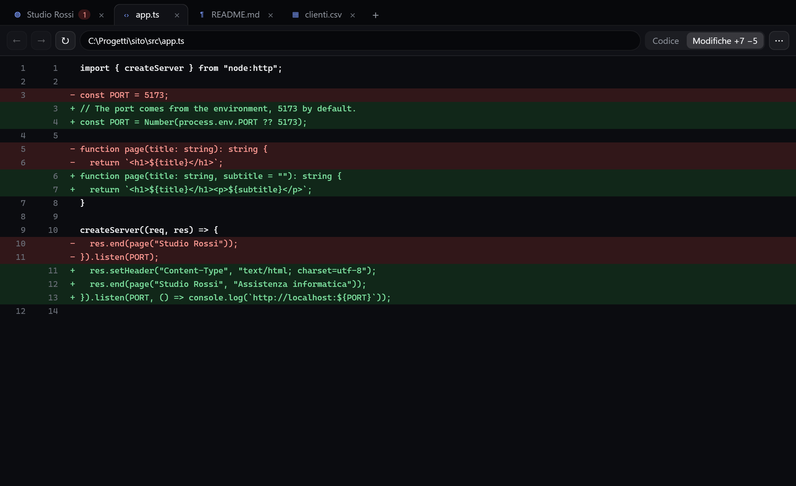
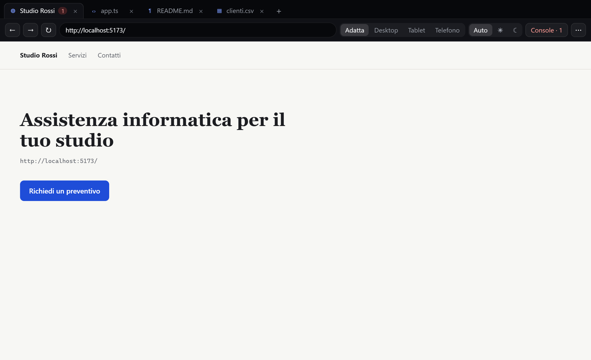

Anteprima
File e pagine web accanto alla chat, in un browser vero: modifiche evidenziate, dimensioni da telefono, console e strumenti per la chat.
L'Anteprima è una finestra con le schede, come un piccolo browser, che sta accanto alla chat. Ci vedi i file su cui la chat lavora e le pagine web: il sito che stai sviluppando su localhost, una pagina che la chat ha appena costruito, un PDF, un CSV.

#Come si apre
- Un link in un messaggio della chat: si apre nell'Anteprima. Con Ctrl+clic va invece nel browser di Windows.
- Un file citato dalla chat (per esempio
src/app.tsoC:\Progetti\sito\README.md): è sottolineato a puntini, un clic lo apre. I percorsi relativi partono dalla cartella della chat (Impostazioni → Chat → Cartella di lavoro). - Da sola, con la Modalità terminale: quando la chat modifica un file, il file compare nell'Anteprima con le modifiche evidenziate, senza rubarti la finestra.
- Il pulsante con la finestra nella testata della chat (con la Modalità terminale accesa).
- Un server di sviluppo appena partito: la card nell'isola ha il pulsante Anteprima. Anche + nell'Anteprima elenca i server in ascolto su questo PC.
- Trascinando un file sulla finestra, o scrivendo un indirizzo o un percorso nella barra.
In Impostazioni → Chat → Anteprima scegli come averla:
- Nell'isola, a destra: un pannello dentro l'isola aperta, a destra della chat. Trascina il bordo fra chat e Anteprima per dare più spazio all'una o all'altra, senza che l'isola cambi misura (doppio clic: larghezza di partenza); si nasconde quando l'isola si chiude e torna quando la riapri. C'è solo con la chat: passando a un'altra scheda dell'isola sparisce. Si chiude con la ✕ in alto a destra o con il pulsante dell'Anteprima nella chat, che la apre e la chiude.
- Finestra separata: una finestra normale, da spostare dove vuoi, anche su un altro schermo.
- Spenta: link e file tornano ad aprirsi nel browser e nei loro programmi.
#I file
| Tipo | Cosa vedi |
|---|---|
| Codice (ts, js, rs, py, cs, ps1, json…) | Righe numerate e colorate |
| Markdown | Anteprima impaginata o Codice |
| CSV | Una tabella (prime 1000 righe) o il testo |
| HTML, SVG, PDF | Nel browser, oppure il codice |
| Immagini | L'immagine; un clic per vederla a grandezza reale |
Quando la chat ha cambiato un file compare Modifiche +7 −5: le righe tolte in rosso, quelle aggiunte in verde, rispetto a com'era prima che la chat lo toccasse. Il file si ridisegna da solo quando cambia, anche se lo modifichi tu.
#Le pagine web
Le pagine sono in un browser vero (lo stesso motore di Edge), non in un'immagine.
- ← → ↻ e la barra dell'indirizzo, come in un browser;
localhost:5173basta, senzahttp://. - Pannello, Desktop, Tablet, Telefono: la pagina larga quanto l'Anteprima o alle misure di quel dispositivo, con il tocco per il telefono.
- Adatta, 100%, Originale: la pagina rimpicciolita finché ci sta (senza un dispositivo scelto, come su un PC), a grandezza normale, oppure un pixel della pagina per ogni pixel dello schermo.
- Auto, ☀, ☾: la pagina in modalità chiara o scura, per provare i due temi del tuo sito.
- Console: messaggi ed errori della pagina; il numero rosso sulla scheda dice quanti errori ci sono.
- ⋯: apri nel browser o nel programma del file, mostra nella cartella, copia l'indirizzo, Strumenti per sviluppatori (quelli di Edge).

#La chat usa l'Anteprima
Con gli strumenti di EasyIsland accesi, la chat può aprire una pagina o un file nell'Anteprima, leggerne il testo, fotografarla, leggere gli errori della console e provarla alle misure del telefono o in modalità scura. Così, dopo aver cambiato il tuo sito, controlla da sola che funzioni prima di dirtelo.
La chat vede la pagina come la leggono i programmi per non vedenti: titoli, testi, pulsanti e campi, ognuno con un suo riferimento. Così clicca proprio l'elemento giusto, anche quando due pulsanti hanno lo stesso testo, sa aspettare che una pagina finisca di caricare e vede le richieste di rete fallite. Quando l'Anteprima è aperta, la chat sa da sola cosa c'è dentro: non serve dirglielo.
Può anche cliccare e scrivere nei campi di una pagina, ma ogni volta chiede Consenti / Nega nell'isola. Non scrive mai password né dati di pagamento.
#Scorciatoie
| Tasti | Cosa fa |
|---|---|
| Ctrl+L | Va alla barra dell'indirizzo |
| Ctrl+R o F5 | Ricarica |
| Ctrl+T | Nuova scheda |
| Ctrl+W | Chiude la scheda |
| Ctrl+Tab | Scheda successiva |
| Alt+← / Alt+→ | Indietro / avanti |
Chiusa la finestra non resta niente in esecuzione; le schede si riaprono uguali la volta dopo.